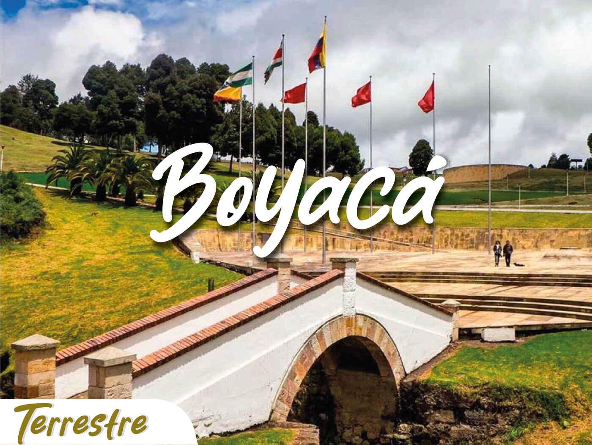

BOYACA
“Boyacá: Corazón de la Independencia”
Datos generales sobre Boyaca:
- Capital: Tunja, una ciudad colonial con un encanto especial.
-
Ubicación: Centro-este de Colombia, limitando con varios
departamentos.
- Extensión: Aproximadamente 23.189 km².
- Población: Más de 1.3 millones de habitantes.
-
Historia: Fue el epicentro de la campaña libertadora de Simón Bolívar
y sus tropas, y su nombre honra la batalla que selló la independencia
de Colombia.
Atractivos turísticos:
-
Tunja: La capital ofrece un centro histórico colonial, museos,
iglesias y plazas encantadoras.
-
Villa de Leyva: Otro pueblo colonial con calles empedradas, casas
blancas y un ambiente tranquilo.
-
El Cocuy: Una de las cordilleras más altas de Colombia, ideal para
practicar senderismo y montañismo.
-
Chiquinquirá: Ciudad religiosa famosa por su basílica y el cuadro de
la Virgen de Chiquinquirá.
-
Sogamoso: Un importante centro comercial y artesanal del departamento.

Datos curiosos:
-
Tierra de páramos: Boyacá alberga una gran parte de los páramos
colombianos, ecosistemas de alta montaña de gran importancia
ecológica.
-
Cuna de la cultura muisca: Antes de la conquista española, la región
de Boyacá fue habitada por los muiscas, una civilización con una rica
cultura y tradiciones.
-
Producción agrícola: El departamento destaca por la producción de
papa, cebolla, maíz y otros cultivos de clima frío.
-
Artesanías: Boyacá es famoso por sus artesanías en lana, cuero y
barro.